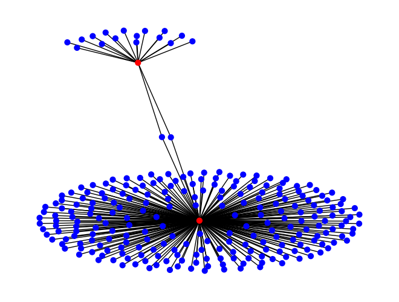

One of the overarching goals of Kùzu is to function as the go-to graph database for data science use cases. NetworkX is a popular library in Python for graph algorithms and data science. In this notebook, we demonstrate Kùzu’s ease of use in exporting subgraphs to the NetworkX format using the get_as_networkx() function. In addition, the following two capabilities are demonstrated.
Graph Visualization: In the first part, we simply draw the nodes and edges in the results using NetworkX.
PageRank: In the second part, we compute PageRank on an extracted subgraph of nodes and edges; store these values back in Kùzu’s node tables and query them.
MovieLens Dataset
We will be working on the popular MovieLens dataset from GroupLens. The schema of the dataset is illustrated as below:
We use the small version of the dataset, which contains 610 user nodes, 9724 movie nodes, 100863 rates edges, and 3684 tags edges.
Create schemas in Kùzu and import the unzipped csv files into Kùzu using COPY FROM clause.
import shutildb_path ='./ml-small_db'shutil.rmtree(db_path, ignore_errors=True)def load_data(connection): connection.execute('CREATE NODE TABLE Movie (movieId INT64, year INT64, title STRING, genres STRING, PRIMARY KEY (movieId))') connection.execute('CREATE NODE TABLE User (userId INT64, PRIMARY KEY (userId))') connection.execute('CREATE REL TABLE Rating (FROM User TO Movie, rating DOUBLE, timestamp INT64)') connection.execute('CREATE REL TABLE Tags (FROM User TO Movie, tag STRING, timestamp INT64)') connection.execute('COPY Movie FROM "./movies.csv" (HEADER=TRUE)') connection.execute('COPY User FROM "./users.csv" (HEADER=TRUE)') connection.execute('COPY Rating FROM "./ratings.csv" (HEADER=TRUE)') connection.execute('COPY Tags FROM "./tags.csv" (HEADER=TRUE)')db = kuzu.Database(db_path)conn = kuzu.Connection(db)load_data(conn)
Example 1: Graph Visualization with NetworkX
Extract a subgraph of 250 ratings edges using Cypher; convert to a NetworkX graph G; and draw a node-link visualization.
res = conn.execute('MATCH (u:User)-[r:Rating]->(m:Movie) RETURN u, r, m LIMIT 250')G = res.get_as_networkx(directed=False)colors = ['red'if G.nodes[node]['_label'] =='User'else'blue'for node inlist(G.nodes())]nx.draw_spring(G, node_color=colors, node_size=40)

Example 2: Interactive graph visualization with yWorks
yfiles-jupyter-graphs is a free tool to generate interactive visualizations of graphs within a Jupyter notebook environment. Follow the docs to install the dependencies.
The following visualization uses the same graph G from above that consists of 250 movie ratings edges.
from typing import Union, Anydef custom_node_color_mapping(node: dict[str, Any]):"""let the color be orange or blue if the index is even or odd respectively"""return ("#eb4934"if node['properties']['_label'] =="User"else"#2456d4")
from yfiles_jupyter_graphs import GraphWidgetw = GraphWidget(graph=G)w.set_sidebar(enabled=False)w.set_node_color_mapping(custom_node_color_mapping)display(w)
Example 3: Compute PageRank, Store Back in the Database and Query
We extract only the subgraph between users and movies (so ignoring tags) and convert to a NetworkX graph G.
res = conn.execute('MATCH (u:User)-[r:Rating]->(m:Movie) RETURN u, r, m')G = res.get_as_networkx(directed=False)
Next compute PageRanks of users and movies.
pageranks = nx.pagerank(G)
Put returned pageranks into a page_rank_df dataframe and get a list of movies and their pageranks into a movie_df data frame.
Alter the movie and user table schemas by adding a new pagerank property to them (of type float64).
try:# Alter original node table schemas to add pageranks conn.execute("ALTER TABLE Movie ADD pagerank DOUBLE DEFAULT 0.0;") conn.execute("ALTER TABLE User ADD pagerank DOUBLE DEFAULT 0.0;")exceptRuntimeError:# If the column already exists, do nothingpass
Scan Pandas DataFrame and copy values to Kùzu
The next feature demonstrated is a powerful one: Kùzu can natively scan Pandas DataFrames in a zero-copy manner, by using the LOAD FROM clause on the variable name that stores the DataFrame. Once the scan is done, the values are accessible by Kùzu via Cypher. This approach is used to read the computed pageranks (which are in a Pandas DataFrame) to the respective node tables in Kùzu.
# Copy pagerank values to movie nodesx = conn.execute(""" LOAD FROM movie_df MERGE (m:Movie {movieId: id}) ON MATCH SET m.pagerank = pagerank RETURN m.movieId AS movieId, m.pagerank AS pagerank; """)x.get_as_df().head()
movieId
pagerank
0
1
0.000776
1
3
0.000200
2
6
0.000368
3
47
0.000707
4
50
0.000724
# Copy user pagerank values to user nodesy = conn.execute(""" LOAD FROM user_df MERGE (u:User {userId: id}) ON MATCH SET u.pagerank = pagerank RETURN u.userId As userId, u.pagerank AS pagerank; """)y.get_as_df().head()
userId
pagerank
0
1
0.000867
1
2
0.000134
2
3
0.000254
3
4
0.000929
4
5
0.000151
We next find the top 20 pagerank movies and then users.
conn.execute('MATCH (m:Movie) RETURN m.title, m.pagerank ORDER BY m.pagerank DESC LIMIT 10').get_as_df()
m.title
m.pagerank
0
Forrest Gump (1994)
0.001155
1
Shawshank Redemption, The (1994)
0.001099
2
Pulp Fiction (1994)
0.001075
3
Matrix, The (1999)
0.001006
4
Silence of the Lambs, The (1991)
0.000987
5
Star Wars: Episode IV - A New Hope (1977)
0.000903
6
Jurassic Park (1993)
0.000825
7
Braveheart (1995)
0.000810
8
Fight Club (1999)
0.000797
9
Schindler's List (1993)
0.000778
conn.execute('MATCH (u:User) RETURN u.userId, u.pagerank ORDER BY u.pagerank DESC LIMIT 10').get_as_df()
u.userId
u.pagerank
0
599
0.016401
1
414
0.014711
2
474
0.014380
3
448
0.012942
4
610
0.008492
5
606
0.007245
6
274
0.006253
7
89
0.006083
8
380
0.005997
9
318
0.005920
As a final example, we find the average ratings from a highly influential (i.e, high pagerank score) user and highly influential movies. To filter high pagerank users, we first set a threshold of a user’s score being above or below the top 10 pagerank scores for all users. Any user with a pagerank score above this value is considered an “influential” user. We repeat this same computation to find the threshold for movies. Then we find all ratings between influential users and movies and take their average.
user_pr_threshold = conn.execute(""" MATCH (u:User) WITH u.pagerank AS user_pr_threshold ORDER BY u.pagerank DESC LIMIT 10 RETURN min(user_pr_threshold) """).get_as_df().iloc[0,0];user_pr_threshold
0.005919808556361484
movie_pr_threshold = conn.execute(""" MATCH (m:Movie) WITH m.pagerank AS movie_pr_threshold ORDER BY m.pagerank DESC LIMIT 10 RETURN min(movie_pr_threshold) """).get_as_df().iloc[0,0];movie_pr_threshold
0.0007781856282699511
avg_rating_df = conn.execute(""" MATCH (u:User)-[r:Rating]->(m:Movie) WHERE u.pagerank > $user_pr_threshold AND m.pagerank > $movie_pr_threshold RETURN avg(r.rating) as avgRBtwHighPRUserMovies; """, parameters={"user_pr_threshold": user_pr_threshold, "movie_pr_threshold": movie_pr_threshold}).get_as_df()avg_rating_df.head()